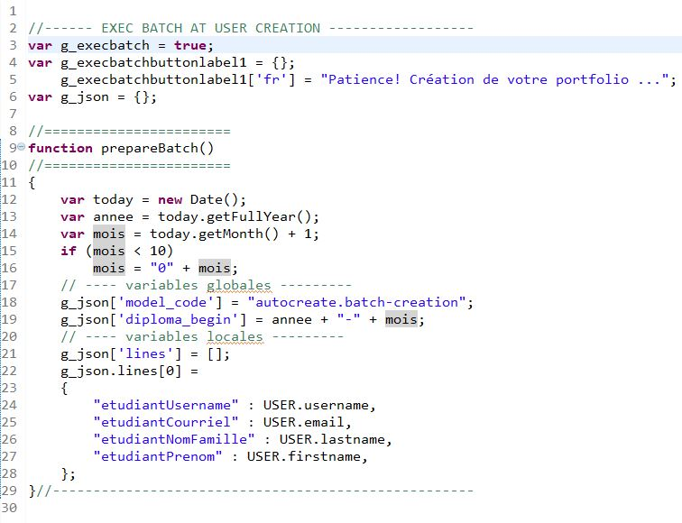

It is possible to automate the creation of a portfolio upon the fist time a user logs into Karuta. In
that case, Karuta will executre a batch created by the designer and the specified in the
application/js/specific.js file.

Execution Condition
For the creation batch to execute upon the user's fist connection, the user account must have the
Creator right — which should be removed at the end of the batch execution. The account must
also have the xlimited instruction in the field Other.

NOTE: if CAS is used, Karuta automatically creates the user account with the CAS identifier
as username, and then sets the Creator right and xlimited instruction the field Other.
Step 1 — Backend Configuration
In the backend's configKaruta.properties configuration file, the following values must
be set:
- casCreateAccount=y
- createAsDesigner=y
Step 2 — Writing the Creation Batch
The batch must include the instructions to create one or more portfolios for the user and then
share these portfolios with said user in the desired role. In the end it must also:
- remove the user's Creator right;
- unshare the new portfolios from the user in the designer role;
- Change the ownership of the new portfolios to root.
Automatic creation batch example:
Download this batch model here.
Étape 3 — Application (Frontend) Configuration
The creation batch and the global variables it refers to must be specified in the frontend's
application/js/specific.js file. Also, the g_execbatch variable on line 3 must be
set to true.

Détails du batch de création
Création du projet Cohorte
Dans notre exemple un projet Cohorte sera créé si il n'existe pas déjà.
Son code et libellé sera la valeur de la vaiable globale défini dans le fichier specific.js (année-mois)
Création du portfolio

Partage du portfolio

Mise à jour des ressources
Dans notre modèle de portfolio, il y a le nom, prénom et couriel de l'étudiant.

Départage du portfolio

Départage du projet

Changement de propiétaire du portfolio
Changement de propiétaire du portfolio